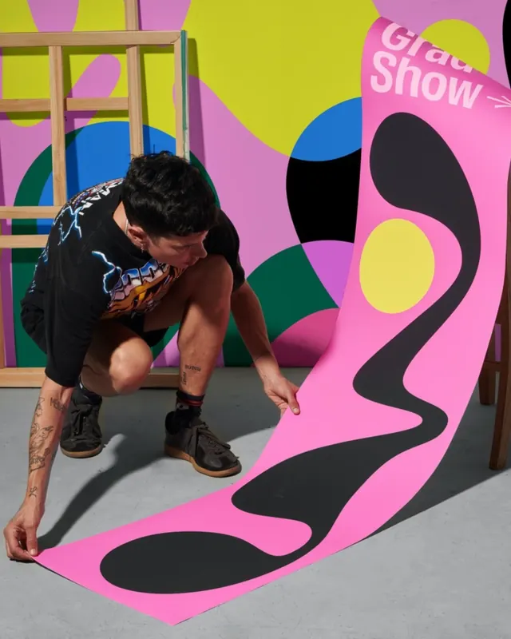

Dos rutas: Copywriter o Director de Arte
-
Copywriter
Un redactor creativo es quien piensa la idea de una campaña y la escribe.
Hoy la publicidad se gana con ideas que la gente repite. Tú escribes conceptos, titulares, guiones y la voz de una marca.
16 materias para convertirte en Copywriter.
Quiero ser Copywriter -
Director de Arte
Un director de arte es quien piensa la idea de una campaña y decide cómo se ve.
Hoy la publicidad se gana con ideas que la gente voltea a ver. Tú creas imagen, tipografía, color y composición.
16 materias para convertirte en Director de Arte.
Quiero ser Director de Arte
Trabajan en dupla, como en una agencia. En la Carrera eliges una ruta. ¿No sabes cuál? Elige «Aún no sé» en el formulario.
Estudiaste diseño, comunicación, publicidad, marketing o cine. O vienes de otra carrera y sabes que lo tuyo es crear.
Sabes usar las herramientas.
Tal vez ya trabajas.
Mandas tu portafolio y no pasa nada.
No es falta de talento.
Tu trabajo todavía no demuestra cómo piensas.
La universidad te dio teoría. Un curso te enseña software.
La industria creativa contrata evidencia.
¿Cómo funciona nuestra Carrera Creativa de 18 meses?
Tu trabajo todavía no demuestra cómo piensas. Aquí lo cambias en tres etapas de seis meses: aprendes a crear ideas, las pones a prueba y las llevas a una agencia.
-
Etapa 1 · Meses 1 a 6
Aprendes de dónde sale una idea.
Lees el encargo de la marca (el brief), encuentras qué le importa a la gente y lo conviertes en una idea de campaña, como Copywriter o como Director de Arte.
Terminas con: tus primeras campañas y un proceso claro para llegar a una idea.
-
Etapa 2 · Meses 7 a 12
Presentas. Te corrigen. Rehaces.
Presentas tus ideas en clase, en vivo, recibes correcciones directas y las rehaces hasta que funcionan.
Terminas con: un portafolio en proceso, listo para ponerse a prueba en una agencia.
-
Etapa 3 · Meses 13 a 18
Entras a una agencia. Después, a otra.
Dos prácticas de 10 semanas, en dos agencias distintas de la red de Miami Ad School. Pueden ser presenciales u online. Briefs, tiempos y equipos reales.
Terminas con: experiencia en dos equipos profesionales y tu portafolio probado con briefs reales.
-
Al terminar los 18 meses
Un portafolio corto y filoso.
Tus mejores campañas, no todo lo que hiciste. Esto es lo que te llevas:
- Un portafolio profesional como Copywriter o como Director de Arte.
- Dos prácticas de 10 semanas en agencias de la red de Miami Ad School.
- Criterio para presentar y defender tus ideas frente a una agencia.

Dos agencias. 10 semanas en cada una.
Learn by doing. Prácticas profesionales de 10 semanas.
Después de tu primer año de clases tienes la oportunidad de entrar a una agencia top internacional. Imagina estar ahí de 9 am a 6 pm, resolviendo briefs, con deadlines, en producciones y aprendiendo de los mejores creativos.
- Todo alumno hace dos prácticas, presenciales u online.
- Dos equipos distintos, dos maneras de trabajar y dos oportunidades de demostrar tu nivel.
Agencias de la red de prácticas de Miami Ad School.
Preguntas frecuentes.
18 meses, online y en vivo, de lunes a jueves de 7 pm a 10 pm, horario CDMX. El primer año son clases; después haces dos prácticas de 10 semanas en agencias.
Hay cuatro inicios al año: el 10 de enero, el 10 de abril, el 10 de julio y el 10 de octubre. El próximo es el 10 de enero de 2027.
Son 18 mensualidades de $12,760 MXN y una inscripción única de $10,000 MXN.
Sí. Agenda tu llamada y pide el link para aplicar a una.
Para entrar, no: necesitas disposición para construir trabajo nuevo y mejorar el que ya tienes. Para conseguir trabajo en agencias y marcas buenas, definitivamente sí. Por eso aquí lo construyes.
No para empezar el proceso. Puedes venir de otra carrera o de otro trabajo. En la llamada revisamos desde dónde empiezas y te confirmamos los requisitos de admisión vigentes.
Mucha gente llega mientras trabaja. Las clases en vivo son de lunes a jueves, de 7 a 10 pm, horario CDMX. Aun así, necesitas tiempo extra para producir, recibir correcciones y rehacer.
Sí. Estudias desde cualquier parte: las clases son online y en vivo, de lunes a jueves de 7 pm a 10 pm, horario CDMX.
Sí. Recomendamos una Mac.
No. Las prácticas sí están aseguradas. El empleo no: depende del trabajo que hagas y del portafolio que construyas.
Miami Ad School ha sido reconocida siete veces como Future Lions School of the Year, incluyendo 2025.
Te llega el folleto al correo. Si quieres, agendas una videollamada de 30 minutos con Ricardo para revisar tu punto de partida y tus dudas. Agendar no te compromete a inscribirte.
Las herramientas ayudan. No sustituyen criterio. La pregunta no es si puedes producir una imagen o un texto. Es si sabes dirigir una idea.
Tenemos 4 inicios al año.
- Próximo inicio
- Próximo inicio
- Próximo inicio
- Próximo inicio
Cómo entras
- Agenda tu entrevista.
- Realiza tu prueba creativa.
Tu título dice qué estudiaste. Tu portafolio muestra qué puedes hacer.
Recibe el folleto con el plan de estudios y las fechas. Si quieres, después agenda 30 minutos con Ricardo.
Próximo inicio: 10 de enero de 2027.
- Deja tus datos. 30 segundos.
- Recibe el folleto en tu correo.
- Agenda con Ricardo, si quieres.
Si decides agendar, hablarás con Ricardo Ampudia Miami Ad School México
Tu folleto ya está listo.
Consulta el programa a tu ritmo. No necesitas agendar una llamada para descargarlo.
Listo. Tu entrevista está agendada.
Revisa tu correo: ahí encontrarás la confirmación con la fecha, la hora y los detalles de la videollamada. Si quieres, ten a la mano lo que hayas hecho hasta hoy; nos ayuda a conocerte mejor.
Qué hace un Copywriter
Así se ve un portafolio que demuestra cómo piensas
Todos ellos son graduados de Miami Ad School México.